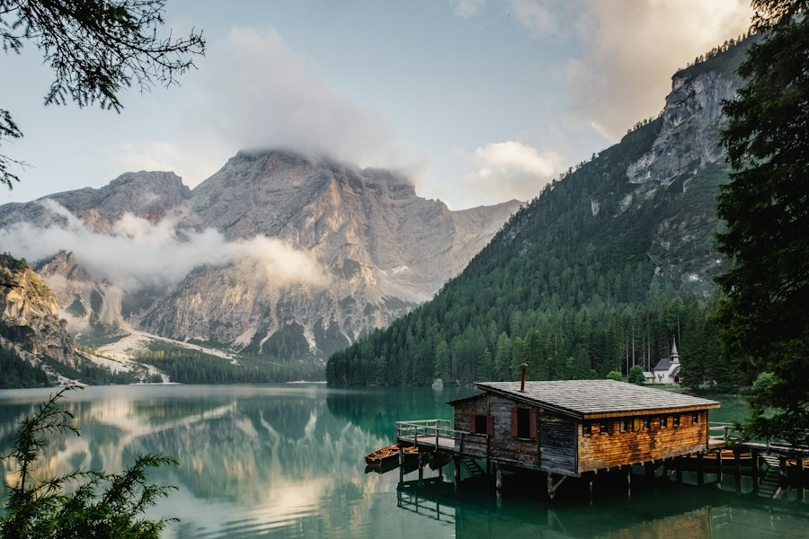
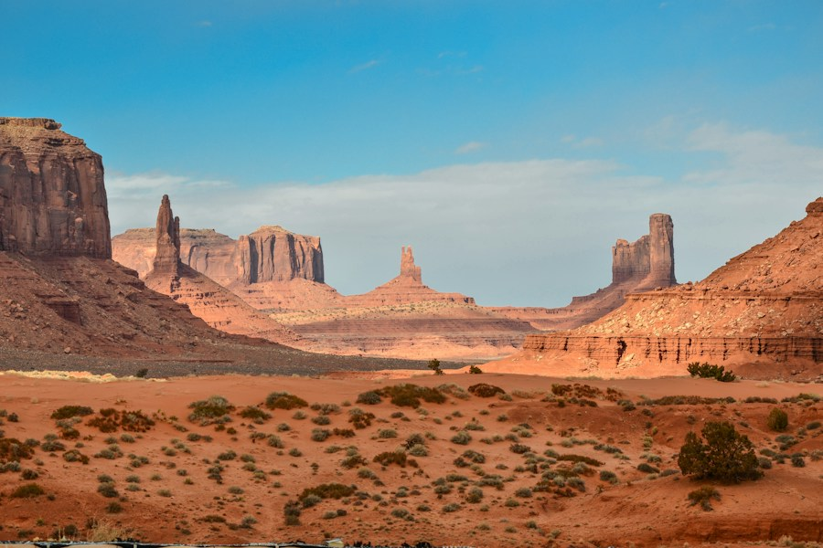
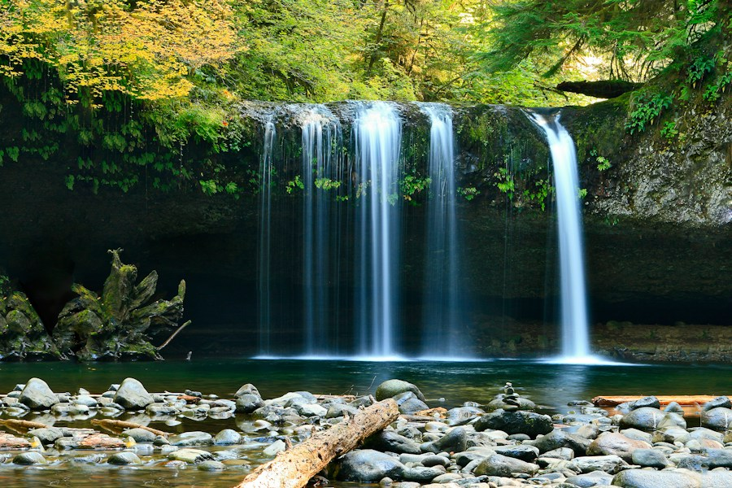

A SMALL COLLECTION OF THE GREAT OUTDOORS
Nature in focus.
Six places. A moment to explore. Hover over a photograph or press Tab to take a closer look.
Hover over an image below to display here.




